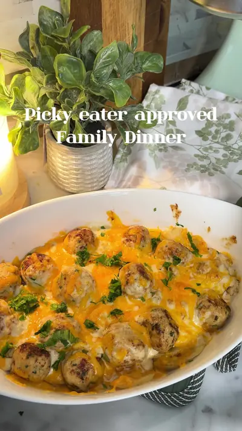

Chicken potato gratin

Ingredients
- 1 chicken breast
- 1 egg yolk
- 3 small/medium potatoes, peeled and sliced into thin rounds
- 1 cup heavy cream
- Butter
- 1 handful mozzarella
- 1 handful cheddar cheese Seasoning
- ½ tsp paprika
- ½ tsp garlic powder
- ½ tsp onion powder
- ½ tsp oregano
- ½ tsp dried parsley
- Salt & pepper (salt only for 1+)
Steps
- Blend chicken, egg yolk, and seasoning.
- Form medium meatballs and keep 1 tbsp of the chicken mixture aside.
- Air fry the potato slices until cooked through.
- Cook the meatballs in butter on medium heat until golden, then remove.
- In the same pan, cook the remaining chicken mixture, then add heavy cream and mozzarella.
- Stir until thick.
- Layer potatoes, meatballs, creamy sauce, then cheddar cheese in an oven dish.
- Bake at 375°F (190°C) for about 10–15 minutes, until the cheese is melted and golden.
- Finish with parsley.
- One meal for the whole family
Recipe text as written by @soniamazri on TikTok. Open original